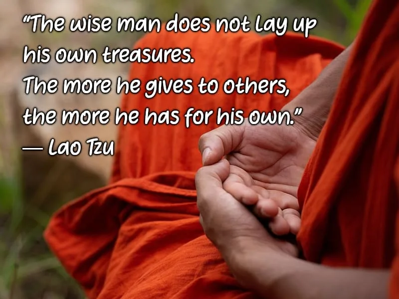

DonateDocumentationOfficial Online ProfilesPrevious page: DonateIndex page: DocumentationNext page: Official Online ProfilesDonors Recognition
On this page we recognize the invaluable contribution our donors make to Whonix.

Thank you to our amazing donors who support our project! Your donations, no matter how small or large, allow us to keep developing and maintaining this open source and free software for everyone. You are the heart of our Whonix operating system and we value your trust and generosity! Thank you for joining our community and for making a significant impact with your donations!
Privacy by Default: Donors will only be added to our recognition list with their explicit or implicit consent based on public disclosure. For information on privacy and consent, please press expand on the right side.
- Explicit Direct Consent: This is provided when a donor applies for recognition.
- Implicit Consent Based on Public Disclosure: This applies when a donation is publicly announced by a donor. We might publish the information that the donor has made public, if we are aware of it. Information that may not have been made public (such as the amount) will not be disclosed.
- Consent Withdrawal: Donors can revoke their consent for recognition by notifying our team.
- Legal Precedence: Our policy is designed to respect donor privacy and comply with applicable privacy laws. In the event of any legal requirements, these will take precedence.
For information on how to get recognized as a donor, please press expand on the right side.
- Start date : This recognition program started 2023-03-01.
- Minimum donation thresholds
- Recognition: $500 is the minimum donation
threshold, which can be a one-time donation or a cumulative donation
since 2012. We would like to emphasize our gratitude towards all donors,
regardless of their donation size. However, managing donation
recognition incurs labor costs, so having a threshold in place is
economically responsible, especially for honoring small donations. This
is standard practice among even larger organizations collecting
donations, as outlined on our
 [Broken-ExtLink--no-url-was-provided] page.
[Broken-ExtLink--no-url-was-provided] page. - Links and company logo: $1,000 is the minimum donation threshold for donors to have a link to their website on their recognition card.
- Recognition: $500 is the minimum donation
threshold, which can be a one-time donation or a cumulative donation
since 2012. We would like to emphasize our gratitude towards all donors,
regardless of their donation size. However, managing donation
recognition incurs labor costs, so having a threshold in place is
economically responsible, especially for honoring small donations. This
is standard practice among even larger organizations collecting
donations, as outlined on our
- Privacy by Default : See our policy about donor privacy atop this page.
- Preview : See examples here for a demonstration how it would look like.
- Identity Recognition Choices :
none|pseudoymous|real name - Profile Image Choice :
none/provided image - Amount Recognition Choices :
hidden/range - Applications : If you, as an individual, or your
organization or company wish to be recognized as a donor, please send an e-mail with proof of the
donation. The proof of donation must include the donor's full name, the
transaction ID, country of tax residence, and a choice of identity
recognition (
pseudoymousorreal name), profile image choice (noneorprovided image), and amount recognition choice (hiddenorrange). - Pre-approval : You are welcome to request pre-approval prior to donating if you have questions about whether you qualify for donor recognition.
- Disclaimer : Our Terms of Service and Policy of Website and Chat apply.
2025 - 2026


Discreet Donor
Donor
Dedicated Donor
Strong Donor
Shining Donor
Super Donor
Power Up Privacy (PUP)
2025-08-15
(confidential)
$500 - $999
$1,000 - $4,999
$5,000 - $19,999
$20,000 - $49,999
$50,000 - $99,999
2024 - 2025
Discreet Donor
Donor
Dedicated Donor
Strong Donor
Shining Donor
Super Donor
FUTO
2024-08-26

(confidential)
$500 - $999
$1,000 - $4,999
$5,000 - $19,999
$20,000 - $49,999
$50,000 - $99,999
Discreet Donor
Donor
Dedicated Donor
Strong Donor
Shining Donor
Super Donor
Power Up Privacy (PUP)
2024-08-15
(confidential)
$500 - $999
$1,000 - $4,999
$5,000 - $19,999
$20,000 - $49,999
$50,000 - $99,999